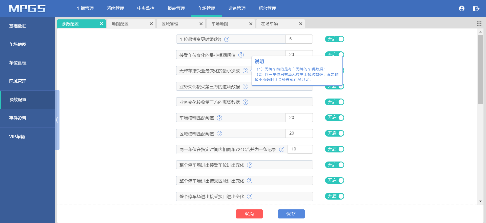
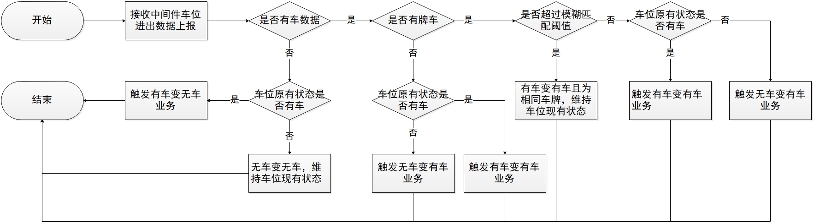

现有问题：
1、mpgs记录的图片，有时是车刚刚停进去的记录，还是个无牌车的记录，但是探头是有拍新的，图片不更新，经常的图片就是那个车头灯还亮着的图片；
2、只拍了车辆停到一半的图片，车辆停稳后的图片不再上报。
……
逻辑优化说明：
1、去掉车位最短变更时间的判断；去掉参数配置中“车位最短变更时间”配置项；
2、去掉无牌车变化最小次数的判断；去掉参数配置中“无牌车接受业务变化的最小次数”配置项
3、详细逻辑见以下流程.


